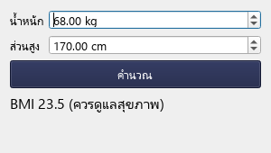
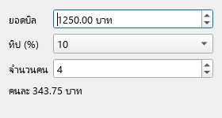

เมื่อจบบทนี้ นิสิตจะทำได้สร้างหน้าต่างด้วย widget จัดวางด้วย layout เชื่อมปุ่มกับฟังก์ชันด้วย signal/slot และเขียนแอปเป็น class
19.1 โครงสร้างแอปพื้นฐาน
ทุกแอป PySide6 มี 4 ขั้น: สร้าง QApplication 1 ตัว → สร้างหน้าต่าง → show() → app.exec() เพื่อรอรับการคลิก/พิมพ์จากผู้ใช้จนกว่าจะปิดหน้าต่าง ติดตั้งด้วย pip install PySide6
topic_19_1.py
import sys
from PySide6.QtWidgets import QApplication, QLabel
app = QApplication(sys.argv)
label = QLabel("สวัสดี PySide6!")
label.setWindowTitle("แอปแรก")
label.resize(280, 100)
label.show()
sys.exit(app.exec())
ผลลัพธ์ · หน้าต่างที่ได้จากการรันโค้ดนี้ จำง่าย ๆโค้ดหลัง app.exec() จะทำงานเมื่อปิดหน้าต่างแล้วเท่านั้น
19.2 widget ที่ใช้บ่อย
widget คือส่วนประกอบบนหน้าจอ ทุกตัว import จาก PySide6.QtWidgets
19.3 layout: จัดวาง widget
ใช้ layout แทนการกำหนดพิกัดเอง หน้าต่างจะปรับขนาดได้สวยงาม QVBoxLayout เรียงแนวตั้ง QHBoxLayout เรียงแนวนอน QFormLayout จัดเป็นคู่ ป้าย–ช่องกรอก และซ้อน layout กันได้
topic_19_3.py
import sys
from PySide6.QtWidgets import (QApplication, QWidget, QVBoxLayout, QHBoxLayout,
QFormLayout, QLineEdit, QPushButton)
app = QApplication(sys.argv)
window = QWidget()
window.setWindowTitle("ลงทะเบียน")
form = QFormLayout()
form.addRow("ชื่อ", QLineEdit())
form.addRow("อีเมล", QLineEdit())
buttons = QHBoxLayout()
buttons.addWidget(QPushButton("ยกเลิก"))
buttons.addWidget(QPushButton("บันทึก"))
layout = QVBoxLayout(window)
layout.addLayout(form)
layout.addLayout(buttons)
window.resize(320, 140)
window.show()
sys.exit(app.exec())
ผลลัพธ์ · หน้าต่างที่ได้จากการรันโค้ดนี้ 19.4 signal และ slot: ทำงานเมื่อผู้ใช้กด
เมื่อผู้ใช้ทำอะไรกับ widget จะเกิด signal เช่น ปุ่มส่ง clicked เราเชื่อม signal กับฟังก์ชัน (slot) ด้วย .connect(ฟังก์ชัน) ใส่แค่ชื่อฟังก์ชัน ไม่ต้องมีวงเล็บ
topic_19_4.py
import sys
from PySide6.QtWidgets import (QApplication, QWidget, QVBoxLayout,
QLineEdit, QPushButton, QLabel)
def greet():
result.setText(f"ยินดีต้อนรับ {name.text()}!")
app = QApplication(sys.argv)
window = QWidget()
window.setWindowTitle("ทักทาย")
name = QLineEdit()
name.setPlaceholderText("พิมพ์ชื่อ")
button = QPushButton("ทักทาย")
result = QLabel("")
button.clicked.connect(greet)
layout = QVBoxLayout(window)
for widget in (name, button, result):
layout.addWidget(widget)
window.resize(300, 130)
window.show()
sys.exit(app.exec())
ผลลัพธ์ · หน้าต่างที่ได้จากการรันโค้ดนี้ (จำลองการกรอกและกดปุ่มแล้ว) จำง่าย ๆconnect(greet()) ผิด เพราะจะเรียกฟังก์ชันทันทีตอนเริ่มโปรแกรม ต้องเป็น connect(greet)
19.5 เขียนหน้าต่างเป็น class
เมื่อแอปใหญ่ขึ้น ให้สร้าง class ที่สืบทอดจาก QWidget สร้าง widget ใน __init__ เก็บเป็น self.xxx และเขียน slot เป็น method โค้ดจะเป็นระเบียบและไม่ต้องใช้ตัวแปร global
topic_19_5.py
import sys
from PySide6.QtWidgets import QApplication, QWidget, QVBoxLayout, QLabel, QPushButton
class CounterWindow(QWidget):
def __init__(self):
super().__init__()
self.setWindowTitle("ตัวนับ")
self.count = 0
self.label = QLabel("กดแล้ว 0 ครั้ง")
self.button = QPushButton("กด +1")
self.button.clicked.connect(self.increase)
layout = QVBoxLayout(self)
layout.addWidget(self.label)
layout.addWidget(self.button)
def increase(self):
self.count += 1
self.label.setText(f"กดแล้ว {self.count} ครั้ง")
app = QApplication(sys.argv)
window = CounterWindow()
window.resize(260, 110)
window.show()
sys.exit(app.exec())
ผลลัพธ์ · หน้าต่างที่ได้จากการรันโค้ดนี้ (จำลองการกรอกและกดปุ่มแล้ว) จำง่าย ๆsuper().__init__() เรียก __init__ ของ QWidget ก่อน ต้องมีเสมอเมื่อสืบทอดจาก widget
ตัวอย่างโปรแกรม
ตัวอย่าง 19.1เครื่องคำนวณ BMI
รับตัวเลขด้วย QDoubleSpinBox คำนวณเมื่อกดปุ่ม และใช้ stylesheet ตกแต่ง
example_19_1.py
import sys
from PySide6.QtWidgets import (QApplication, QWidget, QFormLayout,
QDoubleSpinBox, QPushButton, QLabel)
class BmiWindow(QWidget):
def __init__(self):
super().__init__()
self.setWindowTitle("BMI Calculator")
self.weight = QDoubleSpinBox(suffix=" kg", maximum=300)
self.height = QDoubleSpinBox(suffix=" cm", maximum=250)
self.button = QPushButton("คำนวณ")
self.result = QLabel("กรอกข้อมูลแล้วกดคำนวณ")
self.button.clicked.connect(self.calculate)
form = QFormLayout(self)
form.addRow("น้ำหนัก", self.weight)
form.addRow("ส่วนสูง", self.height)
form.addRow(self.button)
form.addRow(self.result)
self.setStyleSheet("QPushButton { background: #192044; color: white; padding: 6px; }"
"QLabel#result { font-size: 16px; }")
self.result.setObjectName("result")
def calculate(self):
h = self.height.value() / 100
if h == 0:
self.result.setText("กรุณากรอกส่วนสูง")
return
bmi = self.weight.value() / (h * h)
level = "ปกติ" if 18.5 <= bmi < 23 else "ควรดูแลสุขภาพ"
self.result.setText(f"BMI {bmi:.1f} ({level})")
app = QApplication(sys.argv)
window = BmiWindow()
window.resize(300, 170)
window.show()
sys.exit(app.exec())
ผลลัพธ์ · หน้าต่างที่ได้จากการรันโค้ดนี้ (จำลองการกรอกและกดปุ่มแล้ว)BMI Calculator

อธิบาย- QDoubleSpinBox รับเฉพาะตัวเลข จึงไม่ต้องแปลงข้อความหรือดัก ValueError เอง
- method
calculate ทำงานเมื่อกดปุ่ม อ่านค่าด้วย value() แล้วแสดงผลด้วย setText() setStyleSheet ตกแต่งด้วยรูปแบบคล้าย CSS ภาพด้านขวาคือหน้าต่างหลังกรอก 68 kg, 170 cm แล้วกดคำนวณ
ตัวอย่าง 19.2แอปรายการสิ่งที่ต้องทำ
เพิ่ม/ลบรายการใน QListWidget และกด Enter ในช่องกรอกเพื่อเพิ่มได้
example_19_2.py
import sys
from PySide6.QtWidgets import (QApplication, QWidget, QVBoxLayout, QHBoxLayout,
QLineEdit, QPushButton, QListWidget, QLabel)
class TodoWindow(QWidget):
def __init__(self):
super().__init__()
self.setWindowTitle("To-do")
self.entry = QLineEdit(placeholderText="งานใหม่…")
add = QPushButton("เพิ่ม")
remove = QPushButton("ลบที่เลือก")
self.tasks = QListWidget()
self.status = QLabel("0 งาน")
add.clicked.connect(self.add_task)
self.entry.returnPressed.connect(self.add_task)
remove.clicked.connect(self.remove_task)
row = QHBoxLayout()
row.addWidget(self.entry)
row.addWidget(add)
layout = QVBoxLayout(self)
layout.addLayout(row)
layout.addWidget(self.tasks)
layout.addWidget(remove)
layout.addWidget(self.status)
def add_task(self):
text = self.entry.text().strip()
if text:
self.tasks.addItem(text)
self.entry.clear()
self.status.setText(f"{self.tasks.count()} งาน")
def remove_task(self):
for item in self.tasks.selectedItems():
self.tasks.takeItem(self.tasks.row(item))
self.status.setText(f"{self.tasks.count()} งาน")
app = QApplication(sys.argv)
window = TodoWindow()
window.resize(340, 300)
window.show()
sys.exit(app.exec())
ผลลัพธ์ · หน้าต่างที่ได้จากการรันโค้ดนี้ (จำลองการกรอกและกดปุ่มแล้ว) อธิบายreturnPressed คือ signal เมื่อกด Enter ในช่องกรอก เชื่อมกับ method เดียวกับปุ่มเพิ่มได้strip() แล้วตรวจ if text: ป้องกันการเพิ่มงานว่าง- ภาพด้านขวาคือหน้าต่างหลังเพิ่ม 3 งานและเลือกงานที่ 2
แบบฝึกหัดท้ายบท
เรียงจากง่ายไปยาก ลองเขียนเองให้ได้ผลลัพธ์ตรงตัวอย่างก่อน แล้วค่อยเปิดเฉลย
ระดับความยาก: ง่าย ปานกลาง ท้าทาย
ข้อ 19.1หน้าต่างแนะนำตัวง่าย
สร้างหน้าต่างชื่อ About me ที่มี QLabel 3 บรรทัด (ชื่อ, สาขา, งานอดิเรก) เรียงแนวตั้ง
เข้าใจโจทย์- โจทย์ให้
- ข้อมูลของตัวเอง
- ต้องหา
- หน้าต่างที่มีข้อความ 3 บรรทัด
วิธีคิดQWidget + QVBoxLayoutaddWidget(QLabel(...)) 3 ครั้งshow() แล้ว app.exec()
ตัวอย่างผลลัพธ์ · หน้าต่างที่ได้จากการรันโค้ดนี้
แนวคำตอบและเหตุผล
layout จัดตำแหน่งให้ทั้งหมด เราแค่เพิ่ม widget ตามลำดับที่อยากให้แสดง
ex_19_1.py
import sys
from PySide6.QtWidgets import QApplication, QWidget, QVBoxLayout, QLabel
app = QApplication(sys.argv)
window = QWidget()
window.setWindowTitle("About me")
layout = QVBoxLayout(window)
for text in ["ชื่อ: Hobi", "สาขา: Computer Science", "งานอดิเรก: ถ่ายภาพ"]:
layout.addWidget(QLabel(text))
window.resize(260, 120)
window.show()
sys.exit(app.exec())
ข้อ 19.2ปุ่มนับคะแนนง่าย
สร้างหน้าต่างที่มี QLabel แสดงคะแนน และปุ่ม +1 กับ รีเซ็ต
เข้าใจโจทย์- โจทย์ให้
- คะแนนเริ่มที่ 0
- ต้องหา
- กด +1 แล้วคะแนนเพิ่ม กดรีเซ็ตแล้วกลับเป็น 0 (ภาพ: หลังกด +1 สองครั้ง)
วิธีคิด- เขียนเป็น class เก็บ
self.score - method
add_one และ reset connect ปุ่มทั้งสอง
ตัวอย่างผลลัพธ์ · หน้าต่างที่ได้จากการรันโค้ดนี้ (จำลองการกรอกและกดปุ่มแล้ว)
แนวคำตอบและเหตุผล
object จำค่า self.score ไว้ระหว่างการกดแต่ละครั้ง เหมือน class Counter ในบทที่ 12
ex_19_2.py
import sys
from PySide6.QtWidgets import QApplication, QWidget, QVBoxLayout, QHBoxLayout, QLabel, QPushButton
class ScoreWindow(QWidget):
def __init__(self):
super().__init__()
self.setWindowTitle("Score")
self.score = 0
self.label = QLabel("คะแนน: 0")
self.plus = QPushButton("+1")
reset = QPushButton("รีเซ็ต")
self.plus.clicked.connect(self.add_one)
reset.clicked.connect(self.reset)
row = QHBoxLayout()
row.addWidget(self.plus)
row.addWidget(reset)
layout = QVBoxLayout(self)
layout.addWidget(self.label)
layout.addLayout(row)
def add_one(self):
self.score += 1
self.label.setText(f"คะแนน: {self.score}")
def reset(self):
self.score = 0
self.label.setText("คะแนน: 0")
app = QApplication(sys.argv)
window = ScoreWindow()
window.resize(240, 100)
window.show()
sys.exit(app.exec())
ข้อ 19.3แปลงอุณหภูมิปานกลาง
สร้างแอปที่มี QDoubleSpinBox รับองศาเซลเซียส และแสดงฟาเรนไฮต์ทันทีที่ตัวเลขเปลี่ยน (ไม่ต้องกดปุ่ม)
เข้าใจโจทย์- โจทย์ให้
- องศาเซลเซียส เช่น 37
- ต้องหา
- ป้ายแสดง
37.0 °C = 98.6 °F
วิธีคิดsetRange(-100, 100)- signal
valueChanged ของ spin box - เรียก method อัปเดตครั้งแรกใน
__init__ ด้วย
ตัวอย่างผลลัพธ์ · หน้าต่างที่ได้จากการรันโค้ดนี้ (จำลองการกรอกและกดปุ่มแล้ว)
แนวคำตอบและเหตุผล
valueChanged เกิดทุกครั้งที่ค่าเปลี่ยน ผู้ใช้จึงเห็นผลทันที การเรียก update_result() ใน __init__ ทำให้ป้ายมีข้อความตั้งแต่เปิดแอป
ex_19_3.py
import sys
from PySide6.QtWidgets import QApplication, QWidget, QVBoxLayout, QDoubleSpinBox, QLabel
class TempWindow(QWidget):
def __init__(self):
super().__init__()
self.setWindowTitle("Temperature")
self.celsius = QDoubleSpinBox(suffix=" °C")
self.celsius.setRange(-100, 100)
self.result = QLabel()
self.celsius.valueChanged.connect(self.update_result)
layout = QVBoxLayout(self)
layout.addWidget(self.celsius)
layout.addWidget(self.result)
self.update_result()
def update_result(self):
c = self.celsius.value()
self.result.setText(f"{c:.1f} °C = {c * 9 / 5 + 32:.1f} °F")
app = QApplication(sys.argv)
window = TempWindow()
window.resize(240, 90)
window.show()
sys.exit(app.exec())
ข้อ 19.4ฟอร์มสั่งเครื่องดื่มปานกลาง
สร้างฟอร์มด้วย QFormLayout: เลือกเมนูจาก QComboBox (ราคาต่างกัน), จำนวนจาก QSpinBox และติ๊ก เพิ่มวิปครีม (+10) แล้วกดปุ่มสรุปราคา
เข้าใจโจทย์- โจทย์ให้
- เมนู Latte 60, Mocha 65, Tea 45
- ต้องหา
- ภาพ: Mocha 2 แก้ว เพิ่มวิป =
รวม 150 บาท
วิธีคิด- เก็บราคาใน dict แล้ว
addItems(dict.keys()) - อ่าน
currentText(), value(), isChecked() - ราคา = (ราคาเมนู + วิป) × จำนวน
ตัวอย่างผลลัพธ์ · หน้าต่างที่ได้จากการรันโค้ดนี้ (จำลองการกรอกและกดปุ่มแล้ว)
แนวคำตอบและเหตุผล
ข้อมูลราคาแยกไว้ใน dict ด้านบน เพิ่มเมนูใหม่ได้โดยไม่ต้องแก้ส่วนหน้าต่าง
ex_19_4.py
import sys
from PySide6.QtWidgets import (QApplication, QWidget, QFormLayout, QComboBox,
QSpinBox, QCheckBox, QPushButton, QLabel)
PRICES = {"Latte": 60, "Mocha": 65, "Tea": 45}
class OrderWindow(QWidget):
def __init__(self):
super().__init__()
self.setWindowTitle("Order")
self.menu = QComboBox()
self.menu.addItems(PRICES.keys())
self.qty = QSpinBox(minimum=1, maximum=20)
self.cream = QCheckBox("เพิ่มวิปครีม (+10)")
self.button = QPushButton("สรุปราคา")
self.total = QLabel("-")
self.button.clicked.connect(self.summarize)
form = QFormLayout(self)
form.addRow("เมนู", self.menu)
form.addRow("จำนวน", self.qty)
form.addRow(self.cream)
form.addRow(self.button)
form.addRow("ราคา", self.total)
def summarize(self):
each = PRICES[self.menu.currentText()] + (10 if self.cream.isChecked() else 0)
self.total.setText(f"รวม {each * self.qty.value()} บาท")
app = QApplication(sys.argv)
window = OrderWindow()
window.resize(280, 180)
window.show()
sys.exit(app.exec())
ข้อ 19.5To-do ที่ไม่รับงานซ้ำท้าทาย
ต่อยอดตัวอย่างแอป To-do: ห้ามเพิ่มงานว่างและงานที่มีอยู่แล้ว โดยแสดงข้อความเตือนสีแดงใน QLabel
เข้าใจโจทย์- โจทย์ให้
- เพิ่ม
อ่านหนังสือ 2 ครั้ง - ต้องหา
- ครั้งที่สองขึ้นเตือน
มีงานนี้อยู่แล้ว
วิธีคิด- เก็บชื่องานที่มีใน list หรืออ่านจาก QListWidget
- ตรวจกรณีว่างก่อน แล้วตรวจซ้ำ
setStyleSheet("color: #c0392b") ให้ข้อความเตือนเป็นสีแดง
ตัวอย่างผลลัพธ์ · หน้าต่างที่ได้จากการรันโค้ดนี้ (จำลองการกรอกและกดปุ่มแล้ว)
แนวคำตอบและเหตุผล
ตรวจข้อมูลก่อนเพิ่มเหมือนบทที่ 4 แต่แสดงผลบนหน้าต่างแทน print ผู้ใช้จึงรู้ทันทีว่าต้องแก้อะไร
ex_19_5.py
import sys
from PySide6.QtWidgets import QApplication, QWidget, QVBoxLayout, QLineEdit, QListWidget, QLabel
class TodoWindow(QWidget):
def __init__(self):
super().__init__()
self.setWindowTitle("To-do")
self.entry = QLineEdit(placeholderText="งานใหม่ แล้วกด Enter")
self.tasks = QListWidget()
self.message = QLabel("")
self.message.setStyleSheet("color: #c0392b")
self.entry.returnPressed.connect(self.add_task)
layout = QVBoxLayout(self)
for widget in (self.entry, self.tasks, self.message):
layout.addWidget(widget)
def add_task(self):
text = self.entry.text().strip()
existing = [self.tasks.item(i).text() for i in range(self.tasks.count())]
if not text:
self.message.setText("กรุณาพิมพ์ชื่องาน")
elif text in existing:
self.message.setText("มีงานนี้อยู่แล้ว")
else:
self.tasks.addItem(text)
self.message.setText("")
self.entry.clear()
app = QApplication(sys.argv)
window = TodoWindow()
window.resize(300, 220)
window.show()
sys.exit(app.exec())
ข้อ 19.6เครื่องคิดค่าทิปท้าทาย
สร้างแอปที่รับยอดบิล (QDoubleSpinBox) เปอร์เซ็นต์ทิป (QComboBox: 0, 5, 10, 15) และจำนวนคน (QSpinBox) แล้วแสดงยอดต่อคนทันทีเมื่อค่าใดเปลี่ยน
เข้าใจโจทย์- โจทย์ให้
- บิล 1,250 บาท ทิป 10% 4 คน
- ต้องหา
คนละ 343.75 บาท
วิธีคิด- เชื่อม
valueChanged / currentTextChanged ทั้ง 3 widget เข้า method เดียว - ยอดต่อคน = บิล × (1 + ทิป/100) ÷ คน
setRange ให้จำนวนคนเริ่มที่ 1 ป้องกันหารด้วยศูนย์
ตัวอย่างผลลัพธ์ · หน้าต่างที่ได้จากการรันโค้ดนี้ (จำลองการกรอกและกดปุ่มแล้ว)Tip calculator

แนวคำตอบและเหตุผล
signal หลายตัวต่อเข้า slot เดียวได้ ทุกครั้งที่ค่าใดเปลี่ยนจะคำนวณใหม่ทั้งหมด และ minimum=1 ป้องกันหารด้วยศูนย์ตั้งแต่ต้นทาง
ex_19_6.py
import sys
from PySide6.QtWidgets import (QApplication, QWidget, QFormLayout, QDoubleSpinBox,
QComboBox, QSpinBox, QLabel)
class TipWindow(QWidget):
def __init__(self):
super().__init__()
self.setWindowTitle("Tip calculator")
self.bill = QDoubleSpinBox(maximum=100000, suffix=" บาท")
self.tip = QComboBox()
self.tip.addItems(["0", "5", "10", "15"])
self.people = QSpinBox(minimum=1, maximum=50)
self.result = QLabel()
self.bill.valueChanged.connect(self.update_result)
self.tip.currentTextChanged.connect(self.update_result)
self.people.valueChanged.connect(self.update_result)
form = QFormLayout(self)
form.addRow("ยอดบิล", self.bill)
form.addRow("ทิป (%)", self.tip)
form.addRow("จำนวนคน", self.people)
form.addRow(self.result)
self.update_result()
def update_result(self):
total = self.bill.value() * (1 + int(self.tip.currentText()) / 100)
self.result.setText(f"คนละ {total / self.people.value():,.2f} บาท")
app = QApplication(sys.argv)
window = TipWindow()
window.resize(280, 150)
window.show()
sys.exit(app.exec())